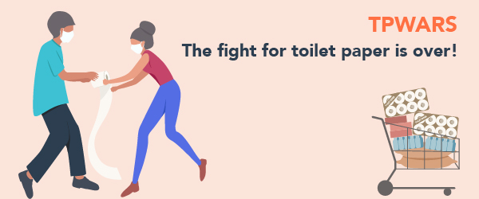
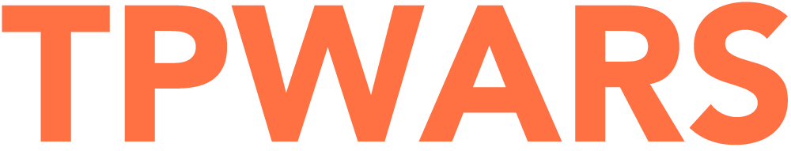

Website Icons, Promotional Images & Logo
Website Icons
All the website icons in the mockups are SVGs, downloaded from flaticon. This type of format allows transparency, same as PNG, in a vector form. This means it can be scaled without losing resolution. Also, SVG files are normally smaller than PNG, which is great when designing for web, as the loading time of pages is a thing to consider.
For the webpage itself I've opted to go with font awesome. TThis is a SVG file library that is inserted on the website as font, allowing easy customisations of the icons with CSS. This is a better option if you don't want to spend too much time designing the icons and still want some consistency, and has the advantage of not having to edit the SVG file directly, as this can be done through CSS.
File information
Example of a SVG image
Example of a font awesome Icon
Promotional Images
The images below are part of a promotional campaign for the introduction of TPWARS to the public.
Avoid waste
The original image was downloaded from
shutterstock. The manipulation on this image was the text using the text tool.
Changing the colour of the bag to orange, using the brush tool to
match the TPWARS branding and to give more colour to the image.
Using a gradient layer on the left hand side of the image to make
the text easier to read, and using the clone tool I have removed a
cucumber that was in the way of the text in the image. The original
image can be found here. Original dimensions were 5504 x 3670px and
the image size was 13.7MB.
After finishing the image
manipulation, the dimensions of a saved file were 1000x667px. As
this is an image for web, there is no need for a file to be as large
as it was originally. The chosen file type was JPG. This is a lossy
compression format, meaning the image loses quality each time it's
saved. For that reason I have maintained the original PSD file, in
case future changes are needed. Also JPG files are smaller than PNG
files, and in this case I didn't need to use PNG as the image didn't
have a transparent background. The image was also saved as a
progressive image, to allow the image to load fully on the website
with little detail and allow details to increase once the image is
fully loaded. This is opposite to the optimised image option that
loads slower, but in its full quality.
File information
Original
Image source: shutterstock
File size: 13.7 mb
Dimensions: 5504 x 3670px
File Format: jpg
Resolution: 300px per inch
Edited
File size: 422 kb
Dimensions: 1000px x 667px
File Format: jpg
Resolution: 72px per inch
Save Money
This image was download from
shutterstock. Original image dimensions were 7242 x 2887px. Only manipulation
on this image was the overlay with the promotional text and the
TPWARS logo.
The image was saved as a JPG for the same reasons
as the image above. The dimensions I've saved it as were 1000x537px,
and it was saved as a progressive image.
File information
Original
Image source: shutterstock
File size: 11.8 mb
Dimensions: 7242 x 2887
File Format: jpg
Resolution: 300px per inch
Edited
File size: 235 kb
Dimensions: 1000px x 537px
File Format: jpg
Resolution: 72px per inch
Never Run Out
This image was downloaded from
shutterstock, and the initial image dimensions were 4390 x 2927px. The image
manipulation here was rotating the image, so the nuts part of the
image would be on the left hand side. I did this by going to the
image menu, and using the sub menu rotation. After this, I've added
the logo, and aligned the main part of the image with the logo, and
reduce the overall image size so the nuts wouldn't take so much
image space. To avoid the blank space left by moving and reducing
the image, I've selected the white spaces and went to the edit menu,
selected the submenu fill and chose content aware. Used the clone
toll for retouching patterns that were obviously repeated. After
that, using the type tool, wrote the text.
Saved the image as a
JPG (same reasons as above), with the dimensions of 1000 x 667px.
File information
Original
Image source: shutterstock
File size: 11.8 mb
Dimensions: 4390 x 2927px
File Format: jpg
Resolution: 300px per inch
Edited
File size: 638 kb
Dimensions: 1000px x 667px
File Format: jpg
Resolution: 72px per inch
Focus on what matters to you
This image was downloaded from
shutterstockand the initial image dimensions were 5472 x 3648px. First I
created an adjustment layer for the levels, where I tried to make
the colours a bit more intense. After that, I created another layer
with a gradient to help text readability, I adjusted the layer to be
only on the text side. After that, using the text tool I wrote the
main message.
Saved the image as a JPG (same reasons as above),
with the dimensions of 1000 x 667px.
Saved the image as a jpg (same reasons as above), with the
dimensions of 1000x667px.
File information
Original
Image source: shutterstock
File size: 9.1 mb
Dimensions: 5472 x 3648px
File Format: jpg
Resolution: 300px per inch
Edited
File size: 341 kb
Dimensions: 1000px x 667px
File Format: jpg
Resolution: 72px per inch
Promotional email banner
This is a promotional email banner that will be inserted on the top of an email campaign. The original Adobe Illustrator (vector) image was downloaded from shutterstock. In the illustrator I've created an artboard with the measurements of a standard email banner, 600x250px, and changed the colours of the characters to match the colours used in the interface. After that I've saved the image as a JPG, as there was no transparency. I've opted for save as type optimised, as there is text in the image, and I wanted to make sure it was as readable as possible.
File information
Edited
File size: 65 kb
Dimensions: 600px x 250px
File Format: jpg
Logo
I have created in Adobe Illustrator the logo, and I have expanded the font, so if people don’t have that specific font installed in their computer they would still be able to resize the logo, change the colour, etc, and the logo would maintain the same font. I've exported the logo as a PNG-8, as the colours I've used fall within its colour palette, allowing me to have a smaller file size than PNG-24. PNG file has also the advantage of allowing transparency, so people that want to use the logo to overlay over an image and don't have Illustrator (or other vector-editing software) can do it easily.
File information
Illustrator
File size: 358kb
File Format: .AI (illustrator)
pngs
File size: 7 kb
Dimensions: 1000px x 191px
File Format: png